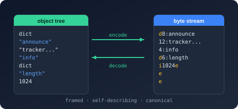

Namespace Bodu.Text.Bencode.Writer

Purpose
Bodu.Text.Bencode.Writer is the emitting counterpart of Bodu.Text.Bencode.Reader in Bodu.Text.Bencode: a forward-only token writer that produces canonical Bencode (BEP 3) bytes into an IBufferWriter<byte>. The BencodeSerializer and both DOMs (WriteTo) emit through it, and a custom BencodeConverter<T> writes its value through it.
Key types
- Utf8BencodeWriter — the
ref structwriter:WriteStartList/WriteEndList,WriteStartDictionary/WriteEndDictionary,WritePropertyName,WriteInteger,WriteString/WriteByteString, the name-plus-value conveniences, andWriteRawValue. - BencodeWriterOptions —
MaxDepthandAllowMultipleRootValues.
Example
using System.Buffers;
using Bodu.Text.Bencode.Writer;
var output = new ArrayBufferWriter<byte>();
var writer = new Utf8BencodeWriter(output);
writer.WriteStartDictionary();
writer.WriteString("cow", "moo"); // keys are sorted when the dictionary closes
writer.WriteInteger("age", 42);
writer.WriteEndDictionary();
// output.WrittenSpan now holds canonical "d3:agei42e3:cow3:mooe".
Notes
- Canonical ordering is automatic. Each dictionary's entries are buffered and sorted bytewise when it is closed; root values and list items stream straight to the destination. There is no
Flush— bytes are committed as they are emitted. - Grammar is enforced. A property name outside a dictionary, a mismatched container end, a duplicate key, or a second root value (without
AllowMultipleRootValues) throws InvalidOperationException. - No booleans, floats, or date-times. Reduce such values to an integer or byte string in a converter before writing.
- See also: the Bodu.Text.Bencode introduction and the Using Bencode guide (Pattern 9 — Process tokens by hand).
Structs
BencodeWriterOptions
Defines the customizations applied when creating a Utf8BencodeWriter.
Utf8BencodeWriter
Provides a forward-only writer that emits canonical Bencode (BEP 3) bytes to an IBufferWriter<T>. Because the grammar requires dictionary keys in ascending bytewise order, the writer buffers each dictionary's entries and sorts them when the dictionary is closed; values at the root and inside lists stream directly to the destination.